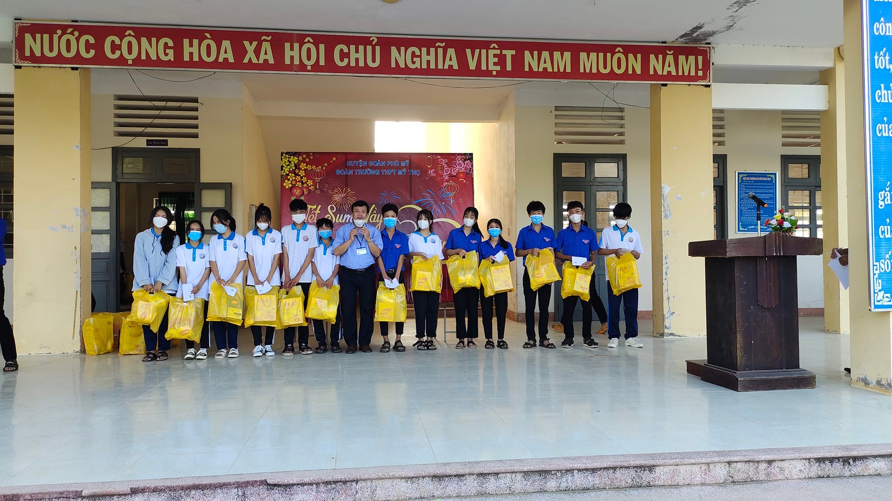
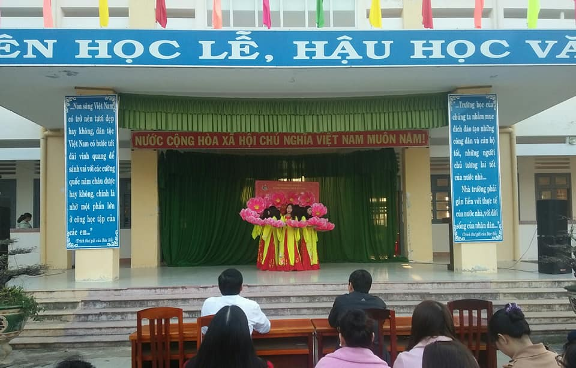

Thông Tin
Thông Tin Học Sinh Giỏi Tĩnh

Trong Kỳ thi chọn học sinh giỏi lớp 12 THPT cấp tỉnh năm học 2021 - 2022,
trường THPT Mỹ Thọ có tổng cộng 12 giải, trong đó có 02 giải nhì và 10 giải ba ở các môn
: Toán, Vật lý, Hóa học, Sinh học, Ngữ văn, Lịch sử, Địa lý và Tiếng Anh.
Đây là sự nỗ lực của quý thầy cô giáo và các em học sinh.
Kỷ Niệm Ngày Thành Lập Đảng Lần Thứ 92

-Kỷ niệm 92 năm ngày thành lập Đảng cộng sản Việt Nam
-Ngày thành lập Đảng Cộng sản Việt Nam 3-2-1930
-Từ ngày 3 đến 7-2-1930, tại Cửu Long (Hương Cảng, Trung Quốc), dưới sự chủ trì của đồng chí Nguyễn Ái Quốc, Hội nghị hợp nhất ba tổ chức Cộng sản ở Việt Nam là Đông Dương Cộng sản Đảng, An Nam Cộng sản Đảng, Đông Dương Cộng sản Liên đoàn, thành một đảng duy nhất là Đảng Cộng sản Việt Nam, với mục tiêu lãnh đạo phong trào cách mạng Việt Nam tiến hành giải phóng dân tộc, giải phóng giai cấp, giải phóng xã hội, giải phóng con người tiến lên chủ nghĩa xã hội.
-Sự thống trị tàn bạo của thực dân Pháp đã làm cho mâu thuẫn dân tộc diễn ra hết sức gay gắt, hàng loạt phong trào yêu nước theo các khuynh hướng khác nhau liên tiếp nổ ra nhằm giải quyết mâu thuẫn chủ yếu đó. Tiêu biểu là phong trào Cần Vương do vua Hàm Nghi và Tôn Thất Thuyết khởi xướng; phong trào Đông Du của Phan Bội Châu; phong trào cải cách của Phan Chu Trinh, khởi nghĩa Yên Thế do Hoàng Hoa Thám lãnh đạo... Các cuộc đấu tranh giải phóng dân tộc tuy diễn ra quyết liệt, song cuối cùng đều bị thất bại, vì thiếu một đường lối cứu nước đúng đắn, thiếu một tổ chức lãnh đạo có khả năng tập hợp sức mạnh của toàn dân tộc.
-Trong bối cảnh đó, tháng 6-1911, người thanh niên yêu nước Nguyễn Tất Thành đã rời Tổ quốc ra đi tìm con đường cứu nước giải phóng dân tộc. Năm 1920 Nguyễn Tất Thành - Nguyễn Ái Quốc đã đến với chủ nghĩa Mác - Lênin; đây không chỉ là bước ngoặt đối với cuộc đời hoạt động cách mạng của Nguyễn Ái Quốc, mà còn là bước ngoặt của cách mạng Việt Nam. Lý luận của chủ nghĩa Mác - Lênin đã soi rọi cho Nguyễn Ái Quốc: Muốn cứu nước và giải phóng dân tộc thì trước hết phải có “Đảng cách mệnh” để “trong thì vận động và tổ chức dân chúng, ngoài thì liên lạc với dân tộc bị áp bức và vô sản giai cấp mọi nơi”. Từ nhận thức đó Nguyễn Ái Quốc ra sức chuẩn bị mọi mặt cho việc thành lập một chính đảng vô sản ở Việt Nam, Người từng bước truyền bá có hệ thống chủ nghĩa Mác - Lênin vào trong nước, đưa phong trào công nhân chuyển dần từ trình độ tự phát lên tự giác; đưa phong trào yêu nước chuyển dần sang lập trường cộng sản
-Tháng 3-1929, Chi bộ Cộng sản đầu tiên được thành lập ở số nhà 5D, Hàm Long, Hà Nội, gồm có Trần Văn Cung, Trịnh Đình Cửu, Ngô Gia Tự, Nguyễn Đức Cảnh, Đỗ Ngọc Du, Nguyễn Phong Sắc, Nguyễn Văn Tuân và Dương Hạc Đính.
-Ngày 1-5-1929, tại Đại hội toàn quốc của Hội Việt Nam Cách mạng Thanh niên ở Hương Cảng (Trung Quốc), đoàn đại biểu Bắc Kỳ đưa ra đề nghị thành lập Đảng Cộng sản. Đề nghị đó không được chấp nhận, trở về nước, ngày 17-6-1929, những đảng viên trong Chi bộ Cộng sản 5D Hàm Long đã tuyên bố thành lập Đông Dương Cộng sản Đảng. Ngày 25-7-1929, An Nam Cộng sản Đảng được thành lập ở Nam Kỳ. Tháng 9-1929 Đông Dương Cộng sản Liên đoàn được thành lập ở Trung Kỳ.
-Chỉ trong một thời gian ngắn ở Việt Nam đã có ba tổ chức cộng sản được tuyên bố thành lập. Điều đó phản ánh xu thế tất yếu của phong trào đấu tranh cách mạng ở Việt Nam. Song sự tồn tại của ba tổ chức cộng sản hoạt động biệt lập trong một quốc gia có nguy cơ dẫn đến chia rẽ lớn. Yêu cầu bức thiết của cách mạng là cần có một Đảng thống nhất lãnh đạo. Nguyễn Ái Quốc, người chiến sĩ cách mạng lỗi lạc của dân tộc Việt Nam, người duy nhất có đủ năng lực và uy tín đáp ứng yêu cầu đó của lịch sử: thống nhất các tổ chức cộng sản thành Đảng Cộng sản duy nhất ở Việt Nam.
-Từ ngày 3 đến 7-2-1930, Hội nghị hợp nhất ba tổ chức Cộng sản họp tại Cửu Long (Hương Cảng, Trung Quốc) dưới sự chủ trì của đồng chí Nguyễn Ái Quốc. Tham gia Hội nghị có các đồng chí Trịnh Đình Cửu, Nguyễn Đức Cảnh (đại biểu Đông Dương Cộng sản Đảng); Nguyễn Thiệu, Châu Văn Liêm (đại biểu An Nam Cộng sản Đảng). Đại biểu Đông Dương Cộng sản Liên đoàn không đến kịp. Hội nghị nhất trí thành lập đảng thống nhất, lấy tên là Đảng Cộng sản Việt Nam, thông qua Chánh cương vắn tắt, Sách lược vắn tắt, Chương trình tóm tắt và Điều lệ vắn tắt của Đảng. Ngày 3 tháng 2 năm 1930 trở thành Ngày thành lập Đảng Cộng sản Việt Nam.
-Hội nghị hợp nhất các tổ chức cộng sản Việt Nam mang tầm vóc lịch sử như là Đại hội thành lập Đảng. Đảng Cộng sản Việt Nam được thành lập là kết quả của cuộc đấu tranh giai cấp và đấu tranh dân tộc ở nước ta trong những năm đầu thế kỷ XX; là sản phẩm cuả sự kết hợp chủ nghĩa Mác - Lênin với phong trào công nhân và phong trào yêu nước; là kết quả của quá trình lựa chọn, sàng lọc nghiêm khắc của lịch sử và là kết quả của quá trình chuẩn bị đầy đủ về chính trị, tư tưởng và tổ chức của một tập thể chiến sĩ cách mạng, đứng đầu là đồng chí Nguyễn Ái Quốc.
-Đó là một mốc lớn đánh dấu bước ngoặt trọng đại trong lịch sử cách mạng Việt Nam, chấm dứt cuộc khủng hoảng về đường lối cứu nước kéo dài mấy chục năm. Trong Chánh cương vắn tắt, Sách lược vắn tắt do đồng chí Nguyễn Ái Quốc khởi thảo, được Hội nghị thành lập Đảng thông qua đã xác định cách mạng Việt Nam phải tiến hành cách mạng giải phóng dân tộc tiến lên chủ nghĩa xã hội. Độc lập dân tộc và chủ nghĩa xã hội là con đường cách mạng duy nhất đúng để thực hiện mục tiêu giải phóng dân tộc, giải phóng giai cấp, giải phóng xã hội, giải phóng con người. Sự ra đời của Đảng Cộng sản Việt Nam với Cương lĩnh, đường lối cách mạng đúng đắn chứng tỏ giai cấp công nhân Việt Nam đã trưởng thành, đủ sức lãnh đạo cách mạng.
-Sự ra đời của Đảng Cộng sản Việt Nam gắn liền với tên tuổi của Nguyễn Ái Quốc - Hồ Chí Minh, người sáng lập và rèn luyện Đảng ta./.
Theo Lịch sử biên niên Đảng Cộng sản Việt Nam, tập 2 (1930 - 1945),
Nxb. Chính trị quốc gia, Hà Nội, 2008
Thư chúc tết của giám đốc Sở Giáo dục & Đào tạo Bình Thuận